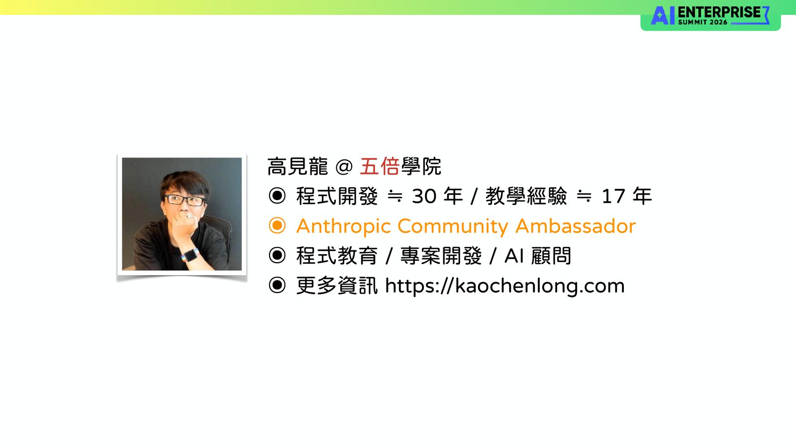
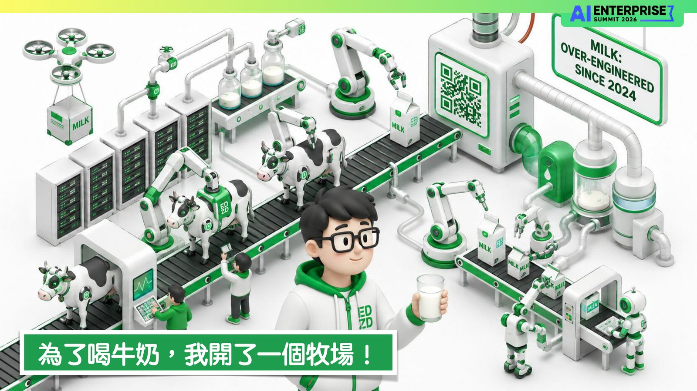
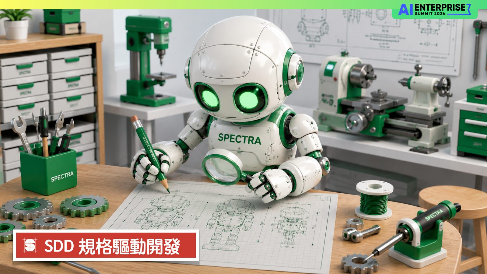
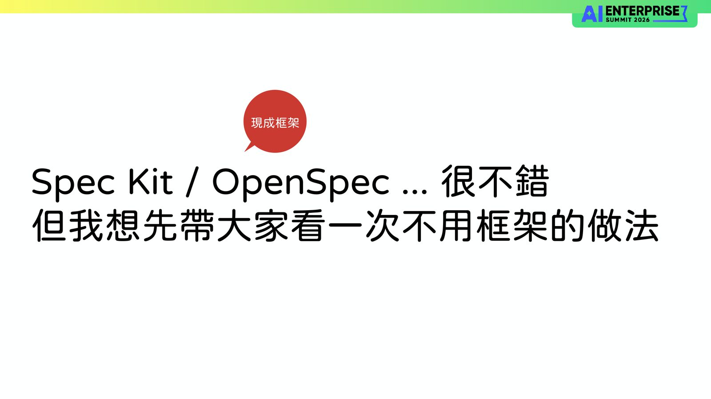

摘要
本演講分享五倍學院創辦人高見龍於 2025 年 6 月，獨自一人利用 AI 開發出涵蓋會員系統、多元金流、發票與票券驗證等龐大售票系統的實戰經驗。針對開發過程中「AI 常常猜錯意圖、代碼偏離預期」的痛點，講者指出問題在於開發者未明確定義需求，因而提出 SDD（Spec-Driven Development，規格驅動開發）的核心理念。SDD 將規格定位為整理且壓縮過的 Context 文件，其撰寫標準是「換另一個 AI 來看也不會誤會」。講者實踐了「提案（討論並產出提案）→ 實作（嚴格照字面執行）→ 歸檔（留下一筆記錄備查）」的簡化流程，並展示自研免費工具 Spectra（整合 SDD Prompts、Skills 與圖形介面），實現高效的任務與提案管理。本演講的關鍵啟示是：藉由清晰的規格定義，能有效約束 AI Agent 的執行路徑，實現高度聽話、低溝通成本的 AI 結對開發。
重點整理
- 2025 年 6 月講者獨自一人開發出功能完整的售票系統，涵蓋會員系統、多元金流、票券驗證、簽到表單等大量功能
- 開發過程中發現「不是 AI 笨，是它在猜你的意圖」，因此需要把需求講清楚讓 AI 照做
- 提出簡化版 SDD 流程「提案 → 實作 → 歸檔」：提案是與 AI 討論並請它撰寫提案、實作照字面執行、歸檔留下紀錄備查
- 除了 Spec Kit、OpenSpec 等現成框架，也展示自製工具 Spectra（SDD Prompts + SDD Skills + 圖形介面），提供提案與任務管理功能
- 規格（Spec）本質上是整理壓縮過的 Context 文件，可直接交給 AI Agent 執行，讓 AI 開發變得更「聽話」
重點圖片／架構圖




一個人打造售票系統的契機
講者高見龍在 2025 年 6 月獨自開發了一套功能豐富的售票系統，涵蓋會員註冊與第三方登入、二階段驗證、多種銷售方案組合、多元金流（信用卡、ATM、藍新、綠界、LinePay）、發票管理、QR Code 票券驗證與轉讓、簽到簿、課後問卷等大量功能。他用「為了喝牛奶，我開了一個牧場」比喻這個過程的龐大與辛苦，也點出開發過程並非一路順遂。
AI 為什麼不聽話
講者反思開發過程中 AI 常常無法照預期執行任務，得出結論「不是 AI 笨，是它在猜你的意圖」。解法在於把要做的事講清楚，讓 AI 照著做而不是自行猜測，而「講清楚」的具體形式就是規格（Spec）。
SDD 規格驅動開發的核心概念
講者介紹 SDD（Spec-Driven Development）的核心精神：規格沒有標準格式，重點是「換另一個 AI 來看也不會誤會」，可以用簡單情境描述（例如「當使用者點擊新增按鈕，就把輸入框文字加到清單最下面」），也可以用更正式的 WHEN...THEN...SHALL 語法。規格通常包含需求（使用者故事）、設計（要做什麼、不做什麼）與任務（拆解成有明確目標與驗收標準的小任務）三個層次。
不靠框架的簡化流程與 Spectra 工具
相較於 Spec Kit、OpenSpec 等現成框架，講者先示範一套不依賴框架的簡化流程：「提案 → 實作 → 歸檔」，提案是與 AI 討論並請它撰寫提案、實作就是照著提案執行、歸檔則是留下紀錄備查。他也介紹了自己開發的免費工具 Spectra，結合 SDD Prompts、SDD Skills 與圖形介面，協助使用者管理提案與任務。
結論：規格讓 AI 更聽話
講者總結，Spec 本質上就是一份文件，是整理與壓縮過的 Context，可以直接交給 AI Agent 執行。有了規格之後，AI 在執行任務時明顯變得更「聽話」，減少猜測意圖造成的落差，這也是他認為值得在團隊開發流程中導入 SDD 的原因。